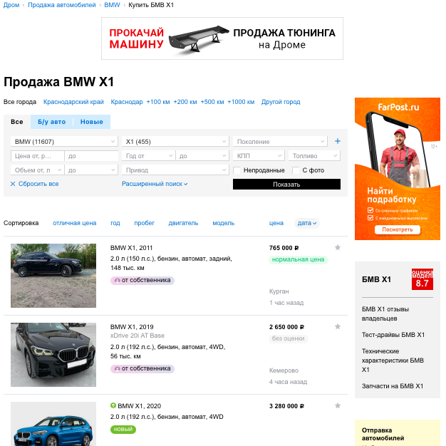
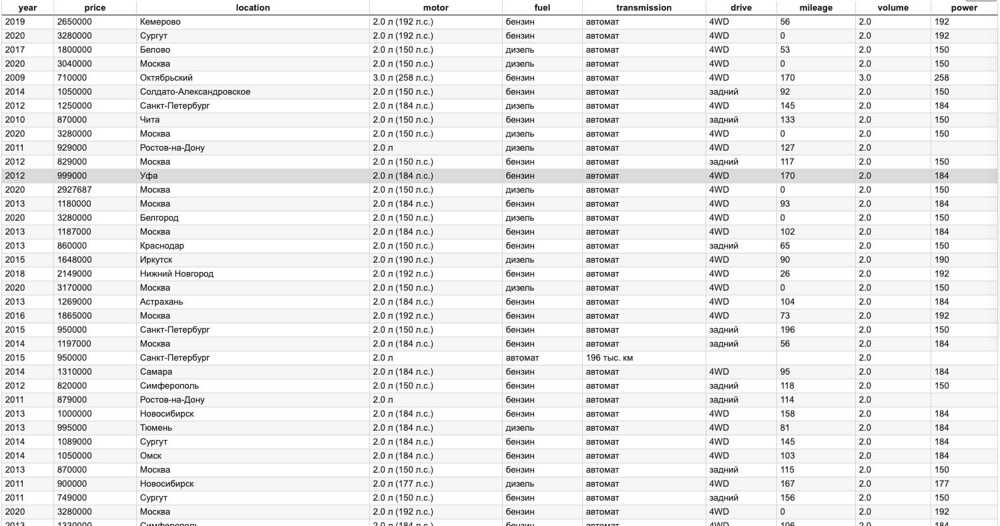
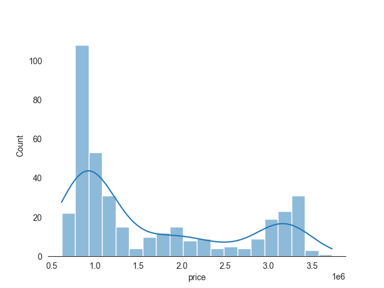
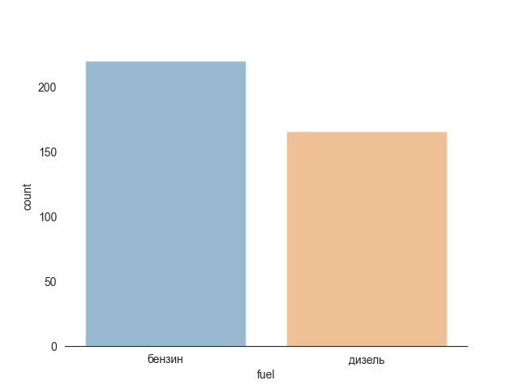
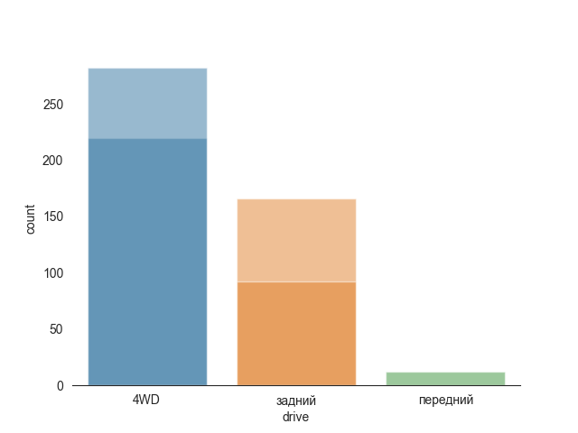
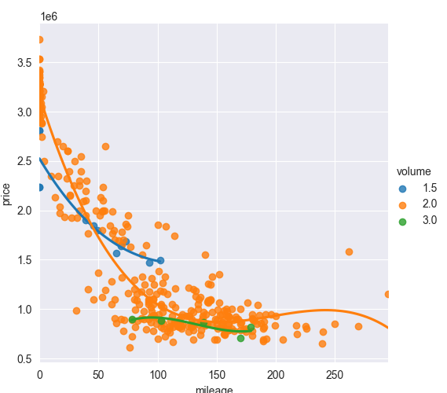
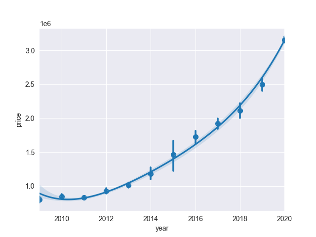

Scraping used car site
Used car prices impacted by many factors, like age, mileage, model, etc.
Objective of this scraping excercise was to fetch data from one of the web sites selling used cars, focusing on BMW X1 model.
Web-site to get data from:

Since number of pages to scrape is small, it is possible to save them to local drive to adjust scraper offline. After checking base URK response, application fetchs for total number of pages to scrape and starts loop to save each page.
# import libraries
import os
import requests
import time
from bs4 import BeautifulSoup
import re
# create folder for pages (if not exists)
if not os.path.exists('pages'):
os.mkdir('pages')
# base URL
base_url = 'https://auto.drom.ru/bmw/x1/'
headers = {"User-Agent": "Mozilla/5.0 (Macintosh; Intel Mac OS X 10.14; rv:66.0) Gecko/20100101 Firefox/66.0", "Accept": "text/html,application/xhtml+xml,application/xml;q=0.9,*/*;q=0.8", "Accept-Language": "en-US,en;q=0.5", "Accept-Encoding": "gzip, deflate", "DNT": "1", "Connection": "close", "Upgrade-Insecure-Requests": "1"}
# get response from base URS
response = requests.get(base_url, headers=headers)
# change encoding
site_encoding = 'cp1251'
response.encoding = site_encoding
print(f'response status code: {response.status_code}')
# check response from base URL is 200
if response.status_code != 200:
exit('Error: bad response')
# get number of pages for scraping
soup = BeautifulSoup(response.content, 'html.parser')
# get data from search table
buttons = soup.find_all('button', {'data-ftid' : 'component_select_button'})
# get number of cars from second input field button
cars_number = buttons[1].get_text()
# clean number and divide by 20 cars per page
pages_number = int(int(re.search(r'\((\d*)\)', cars_number).group(1)) / 20 + 1)
print(f'number of pages for scaping: {pages_number}')
# start saving pages
for page in range(1, pages_number + 1):
# URL page
url = base_url + 'page' + str(page)
# scrape page and change encoding
time.sleep(2)
print(url, end='')
response = requests.get(url, headers=headers)
response.encoding = site_encoding
print(f': {response.status_code} ...', end=' ')
filename = 'pages/page' + str(page) + '.html'
with open(filename, 'wb') as file:
file.write(response.content)
print('saved!')Scraper finds repeated blocks, each block per car, to iterate over. From each block (card) scraper collect specific elements, like year, model, price, etc. Each element then modified and stored to dictionary. Finally, list if dictionary saved to "cars.csv" file for future visual analysis.

from bs4 import BeautifulSoup
from itertools import zip_longest
import pandas as pd
import csv
import re
site_encoding = 'cp1251'
pages_number = 23
# prepare list to store results
cars = []
# start scraping pages
for page in range(1, pages_number + 1):
# selecting HTML file for scraping
filename = 'pages/page' + str(page) + '.html'
print(f'scraping {filename}')
# open html page
with open(filename, encoding=site_encoding) as file:
html = file.read()
soup = BeautifulSoup(html, 'html.parser')
# collect repeated cards of cars
cards = soup.find_all('a', {'data-ftid' : 'bulls-list_bull'})
for card in cards:
# prepare "car" dictionary to store values
car = {}
# get car name in format "BMW X1, 2009"
car_name = card.find('span', {'data-ftid' : 'bull_title'}).string
# keep only year for dataset
car['year'] = int(car_name[-4:])
# car price data contained comment "" inside
# remove comment from tag
price0 = card.find('span', {'data-ftid' : 'bull_price'}).prettify().split('')
# remove new line "\n" characters
price1 = [block.split('\n') for block in price0]
# select only price form 2d list, remove spaces and save to dict
car['price'] = int(price1[0][1].replace(' ', ''))
# location of the car
location = card.find('span', {'data-ftid' : 'bull_location'}).string
# remove ", " characters from end of string and save to dict
car['location'] = location
# description of the car
# define description columns
desc_col = ['motor', 'fuel', 'transmission', 'drive', 'mileage']
# collect in list all description items
desc_items = [card.get_text() for card in card.find_all('span', {'data-ftid' : 'bull_description-item'})]
# sometimes description item 6 (color) added
if len(desc_items) > 5:
desc_items = desc_items[:-1]
# make iterable zip object and save cleaned values to table
for col, desc in zip_longest(desc_col, desc_items, fillvalue=None):
# remove "," from end of string
if desc != None:
desc = desc.strip(',')
car[col] = desc
# get engine volume
volume = car['motor'][:3]
#volume = re.search(r'(\d.\d)\wл', car['motor']).group(1)
try:
car['volume'] = float(volume)
except ValueError:
pass
# get engine power
if re.search(r'(\d\d\d)', car['motor']) != None:
car['power'] = re.search(r'(\d\d\d)', car['motor']).group(1)
# keep only values of km from string "XXX thousend km"
if car['mileage'] != None:
car['mileage'] = re.search(r'(\d*)', car['mileage']).group(1)
elif car['year'] >= 2020:
car['mileage'] = 0
if car['year'] == 2021:
car['year'] = 2020
else:
car['mileage'] = None
# add car to cars list
cars.append(car)
with open('cars.csv', 'w') as file:
writer = csv.DictWriter(file, cars[0].keys())
writer.writeheader()
writer.writerows(cars)After exporing data from saved CSV file, data have to be cleaned from incorrect inputs by users before conduction Vizual Analysis. Pandas library is excellent tool to clean and prepare data.

BMW X1 price ranges from under 1 mio RUB up to 3.5 mio RUB with two main groups: 1 mio RUB and 3-3.5 mio RUB.
Diesel and petrol are evenely distributed 2 main catogories of fuel.

Most of the cars are 4W drive, with very little of front wheel drive.

Next chart is the most interesed for this topic. Price for the car rapidly goes down. New car cost around 3 mio RUB. After 50'000 km average cost go down to 1.8-2.0 mio RUB. More then 30% loss. When mileage reach 100'000 km price drop to 1 mio RUB where it can stay up to 200'000 km.

Similar trend for age of car. New car has price around 3 mio RUB while 2-years old car is slightly above 2 mio RUB (-30% cost). After 7 years car average cost drop to 1 mio RUB.

In first 5 years BMW X1 loose 50% of its cost. This is roughly 300k RUB per year or 10% depreciation rate.
Python code to build chart using Seaborn library:
import pandas as pd
import matplotlib.pyplot as plt
import seaborn as sns
import numpy as np
# load data from CSV file to DataFrame
df = pd.read_csv('cars.csv')
# clean data
df = df[df['mileage'].notna()]
df = df[df['volume'] != 1.8] # wrong input from user
# price histogram
sns.set_style('white')
sns.histplot(df['price'], bins=20, alpha=0.5, kde=True)
sns.despine(left=True)
plt.savefig('report/price_hist.png')
plt.close()
# type of fuel
sns.set_style('white')
sns.countplot(x=df['fuel'], alpha=0.5)
sns.despine(left=True)
plt.savefig('report/fuel.png')
plt.close()
# type of drive
sns.set_style('white')
sns.countplot(x=df['drive'], alpha=0.5)
sns.despine(left=True)
plt.savefig('report/drive.png')
plt.close()
# price change vs mileage
sns.set_style('darkgrid')
sns.lmplot(data=df, x='mileage', y='price', order=3,
hue='volume', ci=None)
sns.despine(left=True)
plt.savefig('report/price_mileage.png')
plt.close()
# price change per year
sns.set_style('darkgrid')
sns.regplot(data=df, x='year', y='price', order=4,
x_estimator=np.mean)
sns.despine(left=True)
plt.savefig('report/price_year.png')
plt.close()Thank you for viewing my project. Any comment, suggestion, please adress to me by email bellow.